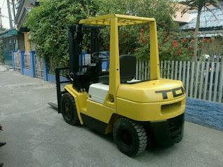

Jual Atap Lengkung di Dumai ☎ ??? (www.dis.or.id)
Pada kesempatan kali ini, kami berkesempatan untuk membahas beberapa produk tentang atap. Ini membuktikan bahwa atap adalah kebutuhan primer setiap bangunan. Namun, bagaimana dengan bangunan kecil, sedang maupun besar? Jangan khawatir tentang hal tersebut, banyak sekali jenis atap yang dapat anda jadikan sebagai referensi pilihan atap bagi bangunan yang anda bangun. Salah satunya adalah atap galvalum, atap lengkung maupun genteng metal. Berat atap yang saya maksud disini tidaklah seberapa, karena berat yang tertopang pada galvalum tersebut sudah tersalurkan dengan baik sehingga tidak akan membebani atap maupun galvalum. Maka simaklah artikel yang akan saya ulas berikut ini.
Distributor & Supplier Atap Lengkung

Salah satu bagian penting pada bangunan baik untuk rumah, kantor maupun toko adalah atap lengkung Dumai. Atap haruslah mempunyai sifat kedap air sehingga air hujan tidak akan merembes kedalam bangunan tersebut.
Atap lengkung terbuat dari bahan galvalum dan zincalum yang sudah terkomposisi dengan sempuran. Bahan penutup atap haruslah dari bahan yang kuat menahan berbagai macam kondisi cuaca. Salah satunya juga harus kuat menahan derasnya air hujan.
Maka sudah pasti bahwa kualitas atap lengkung Dumai tersebut sangat diragukan. Bila anda ingin mengetahui harga dari setiap jenis atap lengkung Dumai maka anda cukup menghubungi kontak yang tertera pada website dis.or.id. dis.or.id adalah distributor terpercaya untuk anda.
Info Pemesanan Selengkapnya
Google Maps: https://www.google.com/maps/d/u/0/viewer?mid=1jTQUf9ULWdUIa8iDLwabVtcOdrQf8Eme&ll=-7.272623401464149%2C112.6482284&z=17
Note: https://www.facebook.com/notes/distributor-of-industrial-supply/pabrik-supplier-atap-lengkung/1782710675362145/
Event: https://www.facebook.com/events/137280070316926/
Portfolio Produk: https://www.facebook.com/pg/DistributorOfIndustrialSupplyDIS/photos/?tab=album&album_id=1683772021922678
Distributor & Supplier Besi Beton

Besi beton sendiri adalah material yang biasa digunakan dalam konstruksi dengan kekuatan yang sangat besar serta tahan terhadap berbagai guncangan dan tekanan. Besi beton dapat menjadi pondasi pada bangunan yang kuat sehingga membuat bangunan yang aplikasikan besi ini dapat kokoh dan tahan lama. Pengaplikasian besi beton pada suatu bangunan kini telah banyak digunakan karena banyak keunggulan yang diberikan oleh Besi beton.
Besi beton terkenal sebagai bentuk besi yang memiliki kekuatan besar dan tahan terhadap berbagai guncangan dan tekanan.
Salah satu cara untuk mendapatkannya adalah dengan membeli di dis.or.id. Kualitas dan mutunya pun telah terjamin. Jadi, anda tidak perlu ragu lagi.
Distributor & Supplier Steel Grating

Steel Grating kini dikenal sebagai salah satu produk yang bermanfaat untuk proses pembangunan. Plat Grating tersebut dibuat dari jenis baja dengan kualitas yang tinggi kemudian dilas antara satu dengan yang lain. Umumnya, Grating digunakan untuk kolam renang. Steel Grating yang terbuat dari baja berkualitas ini dilapisi dengan Galvanis. Tentunya dengan berbagai model dan tipe yang beragam. Grating banyak digunakan dalam pembangunan lantai seperti deck, pabrik, tangga, industri, minyak, pertambangan, dan masih banyak lagi. Pada umumnya, Grating hanya memiliki 2 type, yaitu serrated atau bergerigi dan plain atau polos.
Kini anda bisa mendapatkan steel dengan mengunjungi dis.or.id. Disana anda bisa mendapatkan steel grating dengan berbagai ukuran tertentu dengan harga yang sangat terjangkau namun berkualitas dan bermutu tinggi.
Distributor & Supplier Pipa (Hitam/Gas, Galvanis)

Kekuatan dari pipa hitam gas ini memang sangat kuat, tak heran bila untuk kebutuhan konstruksi bangunan yang berat material ini tidak pernah absen. Setiap konstruksi bangunan pasti akan memanfaatkan jenis pipa hitam karena ia sangat kokoh, bahkan bagian luarnya telah terlapis oleh stainless steel sehingga menjadikannya tahan korosi. Pipa hitam gas galvanis banyak digunakan untuk keperluan area pertambangan minyak gas, untuk itu banyak juga yang mengira pipa hitam ini adalah pipa gas. Sifatnya yang tahan karat menjadikan pipa ini dapat diaplikasikan disegala perubahan cuaca Indonesia. Hubungi segera kontak yang telah tersedia untuk informasi lebih detail, kami menerima segala kebutuhan besi baja anda kapanpun dan dimanapun.
Distributor & Supplier Kawat Bronjong/Gabion

Kawat bronjong bisa bertahan sangat lama karena kawat ini tidak mudah berkarat. Umumnya, kawat ini dipasang di tebing yang rawan sekali mengalami longsor, terutama ketika musim hujan tiba. Gunanya agar kawat tidak karat. Hanya saja, karena ini berfungsi untuk mencegah erosi, maka kualitas kawat berbeda dengan kawat yang sering digunakan. Selain itu, kawat ini juga digunakan pada tiang penyangga bangunan besar atau tiang penyangga jembatan. Tujuannya agar tidak mudah tergerus ketika adanya arus air.
Disan anda bisa mendapatkan informasi tentang kawat bronjong dengan berbagai ukuran dan harga yang pastinya sangat terjangkau. Karena disana anda akan mendapatkan penawaran mengenai kawat bronjong denga berbagai ukuran.
Distributor & Supplier WF H-beam

Saat ini, jenis besi WF memang banyak dicari. jenis besi WF banyak dimanfaatkan sebagai konstruksi baja. Besi jenis ini juga cocok untuk Anda pakai guna membangun rumah, industri, jalan raya, pagar, pabrik, dan masih banyak lagi lainnya. Sungguh mudah bukan?
Kini anda bisa mendapatkan besi WF dengan kualitas terbaik dan mutu terjamin. Disana anda bisa mendapatkan besi tersebut dengan kualitas terbaik serta harga yang sangat terjangkau.
Distributor & Supplier Expanded Metal

Expanded metal ini bisa dibilang sebagai hasil dari kemajuan teknologi yang terbuat dari baja berkadar karbon rendah dengan kekuatan yang lebih tanpa harus di las serta tanpa menggunakan sambungan. Umumnya penggunaan dari Expended Metal ini adalah untuk walkway atau catwalk, anak tangga pada tower serta banyak juga digunakan di dermaga/konstruksi lepas pantai/pertambangan. Selain itu, Expanded Metal ini juga memiliki banyak jenis.
Kini anda bisa membeli expanded metal yang anda inginkan dengan mengunjungi dis.or.id. Jenis ini dapat Anda gunakan sebagai pengaman partisi, pagar pembatas, penutup mesin, tanduk kendaraan, dinding panel, angin-angin dan masih banyak lagi.
Distributor & Supplier Plat (Hitam, Kapal, Bordes, Strip)
.jpg)
Anda bisa mendapatkan plat hitam, plat kapal, plat bordes dan plat strip dengan mengunjungi situs dis.or.id. Kualitas yang diberikan sudah terjamin dan bisa anda buktikan sendiri.
Distributor & Supplier Floor Deck (Bondex)

Jika dibandingkan dengan triplek maupun bahan lain yang digunakan untuk membuat sebuah dek, ada beberapa kelebihan Floor Deck yang tidak dimiliki oleh beberapa bahan lain tersebut. Menggunakan Floor Deck bisa mengurangi pemakaian perancah serta tiang-tiang penyangga sehingga akan lebih menghemat biaya. Bentuk dari Floor Deck ini umumnya bergelombang serta dari segi ukurannya selalu sama, yaitu 5 cm.
Jika anda ingin mengetahui lebih lanjut mengenai floor deck ini, anda bisa langsung mengunjungi dis.or.id. Anda juga bisa langsung memesannya ataupun hanya ingin mengetahui detail harga yang di patok dari floor deck tersesbut. Pastinya dengan harga yang sangat terjangkau dan dengan mutu terbaik.
Distributor & Supplier Atap Galvalum

Dewasa ini, banyak orang yang menggandrungi atap galvalum dikala pembangunan. Atap galvalum umumnya dijual dengan sistem per lembar.
Primadona galvalum ini dinilai lebih efektif jika dibandingkan dengan galvanis. Kerap kali disebut baja ringan, kekuatannya tidak kalah bila dibandingkan dengan baja konvensional.
Galvalum diklaim mempunyai daya tahan karat 4x lebih kuat dari galvanis. Anggapan ini sangat keliru, karena galvalum bukanlah atap seng pada umumnya. Penggunaan galvalum terbilang lebih efektif bila dibandingkan dengan galvanis. Seng tidak dapat memantulkan panas dari matahari. Tapi kayu rentan dimakan oleh rayap.
Distributor & Supplier Truss Canal C
Sebagai informasi untuk anda, bahwa besi kanal C ini di kalangan para pekerja bangunan juga kenal dengan nama Besi CNP. Jadi, galvalum adalah salah satu jenis baja terbaik dimana memiliki cirikas ringan dan tipis namun memiliki daya tahan, dan kekuatan yang sangat baik bahkan di klaim lebih baik bila kita bandingkan dengan baja konvesional. Sehingga akan awet bahkan dengan karat sekalipun. Besi kanal C ini lebih banyak di pakai untuk atap sebuah rumah, terutama dalam membangun rangka atap nya. Maka janganlah ragu dengan pilihan anda. Oleh karena itu, jangan ragu lagi atas kegunaan besi yang satu ini.
Distributor & Supplier Hollow Galvalum

Apakah anda sedang membutuhkan atau mencari informasi seputar hollow galvalum? Penasaran dengan fungsinya? Harganya? Atau keterangan keterangan lainnya. Namun, untuk mendapatkan hollow galvalum ini anda tidak perlu repot untuk mencarinya.
Selain dinilai lebih kuat, ternyata juga lebih ekonomis. Kami akan mengirim barang pesanan anada sampai pada tujuan dengan aman, cepat dan tepat tujuan. Sehingga tidak heran bila hollow galvalum menjadi produk paling dicari oleh masyarakat dalam industri pembangunan. Kami akan mengirim barang pesanan anda sampai pada tujuan dengan aman, cepat dan tepat tujuan. Dengan banyaknya cabang supplier kami dapat menjangkau pengiriman sampai ke pelosok Indonesia. Tunggu apa lagi, silahkan hubungi customer service kami untuk melakukan pemesanan hollow galvalum.
Distributor & Supplier Seng Gelombang

Seiring perkembangan jaman, seng gelombang mengalami peningkatan dari waktu ke waktu. Kali ini seng gelombang hadir dengan desain warna yang menarik-menarik. Daya tahannya pun terhadap cuaca jadi lebih kuat dari seng gelombang sebelumnya. Seng gelombang sekarang ini diburu banyak masyarakat untuk menutup bagian atap bangunan mereka. Sedangkan sekarang ini telah tersedia berbagai macam atap bangunan berbentuk seng gelombang yang memiliki banyak keunggulan, baik dilihat dari fungsi maupun harga jual pasarnya.
Tetapi, janganlah ragu dengan hal demikian. Seng gelombang dengan warna ataupun transparan amatlah awet bila dibandingkan dengan bahan pembuat atap lainnya.
Distributor & Supplier Plat Seng

Seng atau Plat gavalum dapat dikatakan pembaruan dari seng biasa pada umumnya, karena jenis seng ini tidak panas, tidak bising, anti karat, tahan lama dan masih banyak kelebihan lainnya. Selain itu manfaat dan kelebihan yang dimiliki jauh lebih banyak dari seng biasa.
Harga plat galvanis lembaran dan per meter juga berbeda beda. Plat seng dan plat galvalum banyak digunakan untuk berbagai kebutuhan, dari kebutuhan pembangunan rumah, industri, pabrik dan berbagai kegunaan lainnya. Ketebalan plat tentu disesuaikan dengan kebutuhan, pastikan anda membeli plat galvanis dengan ukuran yang anda butuhkan, agar tentunya lebih efisien dalam hal anggaran. Namun apabila anda berencana membangun sebuah atap dari awal, sebaik nya anda membeli plat galvanis lembaran, karena kebutuhan anda banyak dan juga luas, sehingga yang lembaran ini akan lebih efektif untuk anda.
Lalu berapa harga plat galvanis 2018? Bila anda sedang mencari harga terbaru hari ini juga, anda dapat menghubungi kami karena kami menjual plat galvanis, galvalum dengan berbagai ketebalan dan ukuran.
Distributor & Supplier Genteng Metal

Kami akan mengulas seputar tentang genteng metal pasir terbaik. Secara sederhana genteng metal adalah salah satu jeni genteng yang terbuar dari kumpulan berbagai bahan logam dan memiliki ciri kas mengkilat, ringan dan tahan lama. Genteng metal adalah genteng yang terbuat dari campuran dari bahan bahan yang terbuat dari logam, seperti zinc, baja ringan dan galvanis. Memang saran terbaik ketika anda ingin menggunakan atap dari genteng metal adalah gunakan jenis genteng metal pasir terbaik. Dengan berbagai keunggulan yang sudah saya jabarkan diatas, maka apalagi yang anda tunggu untuk mendapatkannya? Segera dapatkan genteng metal tersebut di official situs kami di dis.or.id dan dapatkan penawaran menarik. Kami dapat menjamin genteng metal yang kami jual adalah produk yang berkualitas. Warnanya pun beragam sehingga akan membuat rumah maupun bangunan yang dinaunginya menjadi terlihat lebih modern dan berbeda dibandingkan dengan rumah-rumah lain di sebelahnya.
Karena kepuasan dan kepercayaan pelanggan adalah segalanya bagi kami.
Distributor & Supplier Besi Wiremesh

Wiremesh merupakan besi lonjor panjang yang disusun seperti anyaman sehingga membentuk lembaran. Struktur dari besi anyam sendiri ada yang membentuk kotak dan jajar genjang, anda bisa memesan kebutuhan wiremesh ini sesuai kebutuhan. Pengaplikasian besi wiremesh dalam kehidupan ini cukup banyak, apalagi dalam dunia konstruksi, besi wiremesh dimanfaatkan sebagai penguat dak beton, plat lantai, dan juga anak tangga. Setiap jenis bentuk wiremesh dimanfaatkan untuk kebutuhan yang berbeda-beda, tergantung dari anda memilih jenis anyam kotak atau jajar genjang. Besi wiremesh terdiri dengan berbagai macam ukuran ketebalan, ketebalan 8 – 10 digunakan untuk bangunan bertingkat. Sementara ketebalan 4 – 6 dimanfaatkan untuk bangunan biasa. Besi wiremesh diproduksi dengan sistem las otomatis sehingga hasilnya rapi dan jaraknya teratur.
Distributor & Supplier Pagar BRC

British Reinforced Concrete / Pagar BRC merupakan pagar yang dibuat dari material beton dengan diameter variasi 5 mm – 8 mm tergantung dengan ukuran ketinggian. Potongan besi berdiameter tertentu tersebut dig abungkan dengan bantuan mesin las wiremesh. Apalagi pagar BRC telah terlapisi dengan galvanis yang membuatnya tahan karat dan bertahan hingga 10 tahun ke atas, anda bisa aplikasikan pagar BRC ini di daerah korosif sekalipun.Dan juga pagar BRC memiliki lapisan galvanis sehingga ia daya tahan terhadap karat > 10 tahun sehingga sangat cocok diaplikasikan pada idaerah yang korosif seperti tepi pantai, daerah belerang, atau dekat pabrik. Bagi anda yang membutuhkan pagar BRC anda dapat menghubungi kami untuk informasi pemesanan.
Distributor & Supplier Kawat Loket, Kawat Harmonika

Untuk kebutuhan kawat penyekat, kawat pagar, maupun penutup jendela anda bisa manfaatkan jenis kawat loket harmonika karena strukturnya yang kuat dan membentuk seperti anyaman. Dengan bentuknya seperti anyaman yang kokoh, anda dapat memanfaatkan kawat loket harmonika untuk berbagai keperluan. Untuk kehidupan sehari-hari kawat harmonika banyak digunakan untuk keperluan rumahan, konstruksi, dan industri. Jika anda membutuhkan kawat loket harmonika ini, tentu saja kami telah mempersiapkan produk ini untuk anda, telah tersedia kawat loket dengan ukuran bermacam-macam dari diameter 1,5 mm sampai 4 mm dan ukuran lubang 20 mm sampai 70 mm. Anda dapat menghubungi kami untuk info pemesanan kawat harmonika tersebut, tersedia kawat harmonika dengan diameter 1,5 mm sampai 4 mm, lubangnya bisa mencapai 20mm sampai 70mm tergantung kebutuha anda. kami dapat memenuhi kebutuhan kawat loket harmonika anda dengan beragam ukuran, maksimal ukuran yang diterima adalah 3 meter.
Distributor & Supplier CNP & UNP

Besi UNP atau yang biasa disebut dengan besi kanal merupakan besi yang memiliki bentuk lengkung seperti huruf U dan biasanya diaplikasikan sebagai sambungan atau dudukan atap. Selain sebagai material konstruksi sambungan, besi kanal U banyak digunakan untuk kebutuhan penutup dinding / girts. Apabila anda amati sekali lagi, sebenarnya pemanfaatan dari besi UNP hampir mirip dengan WF, tapi karena besi UNP memiliki bentuk yang melengkung masih jarang orang yang memanfaatkan material ini untuk keperluan kolom bangunan. Sedangkan untuk besi CNP sendiri lebih banyak digunakan pada dinding cladding atau gording. Besi UNP dan CNP sangat fleksibel mengingat ia dapat dimodifikasi dari plat koil menggunakan teknik cutting.
Distributor & Supplier Besi Siku

Pastinya anda sudah mengenal material besi siku ini dengan baik, dengan ciri khasnya sebagai besi penyangga banyak sekali manfaat yang diberikan olehnya. Besi siku sangat dapat diandalkan untuk kebutuhan sebagai besi penyangga. Kedua sisi pada besi siku berbentuk tegak lurus dengan sudut yang berbeda, ada besi siku sama sisi, dlsb. Untuk panjangnya, pada umumnya besi siku dibuat dengan ukuran 6 meter dan ketebalan lebar yang berbeda-beda. Anda dapat memesan besi siku dengan berbagai ukuran pada kami. Hubungi saja kontak yang telah tersedia untuk mengetahui informasi pemesanan lebih detail.
Distributor & Supplier Hollow (Hitam, Galvanil, Galvanis)

Dis.or.id pun telah menyediakan produk besi hollow hitam galvanis ini untuk dapat anda pesan langsung! Tersedia ukuran besi hollow 40 x 40 x 2 mm x 6 Meter, 50 x 50 x 3 mm x 6 Meter hingga ukuran 150 x 150 x 5 mm x 6 meter dan masih banyak lagi. Besi hollow bisa dimanfaatkan untuk berbagai keperluan, misalnya seperti pagar, pintu besi, teralis, dan masih banyak lagi. Jika anda membutuhkan besi hollow maka sebelum memesan pada kami anda harus melakukan perhitungan kebutuhan dahulu, seperti berapa panjang dan ketebalan yang diperlukan. Untuk itu hubungi kontak kami segera!
Distributor & Supplier Pipa Pancang

Untuk yang di bahas pertama adalah pipa pancang. Sebagai sebuah konstruksi bangunan, tentu saja hal yang satu ini tidak asing lagi. Terutama bagi Anda yang sedang membangun proyek di atas permukaan laut, tentu saja ini akan sangat membantu. Sedangkan dari segi spesifikasi, pipa pancang tersedia dalam berbagai ukuran. Sedangkan dalam pemesanannya, jangan khawatir karena banyak sekali penjual tiang pancang terpercaya yang bisa Anda temukan. sedangkan untuk kualitas yang Anda dapatkan, jangan khawatir karena bisa di jamin mutunya tinggi. Dengan demikian Anda akan mendapatkan pipa pancang berkualitas. Bukan hanya kualitas bahannya saja yang bagus tetapi juga untuk pembuatannya. Dengan begini, maka dalam penggunannya, pipa pancang juga bisa di aplikasikan secara maksimal.
Jasa Pondasi Bor (Strouss/Borepile)

Ketika melakukan proyek pembangunan rumah sendiri, kualitas yang baik hingga dalam hal pengeboran pondasi pun akan menjadi hal yang di harapkan. Dalam hal ini, sekarang Anda tidak pelru khawatir karena ada banyak jasa yang melayani jasa pondasi bor. Bahkan di Indonesia ini pun juga telah tersebar di mana-mana. untuk kualitasnya pun tidak perlu di pertanyakan lagi karena dengan jasa profesional yang lebih berpengalaman ini, pengeboran akan semakin terjamin. Hanya saja selama proses pengeboran akan muncul suara bising meskipun tidak di sertai getaran. Dalam prosesnya, pengeboran ini akan menimbulkan suara bising karena mesinnya yang sedang bekerja. Nah, jika tidak ingin menggunakan jasa bor, maka Anda bisa memiliki mesinnya sendiri. Mesin seperti ini pun telah banyak di temukan di pasaran.
Distributor & Supplier Genset (New/Second)

Genset atau generator set yang menghasilkan tenaga listrik kini telah banyak di gunakan sebagai alternatif. Apalagi manfaatnya yang bisa menghasilkan tenaga listrik. Untuk keduanya pun bisa Anda beli di DIS.
Dengan harga genset yang cukup tinggi, memang akan lebih ringan jika membeli genset yang sudah second. Akan tetapi, meski bekas, jangan khawatir karena kualitasnya masih cukup baik dan hampir menyamai genset yang baru. Meski demikian, masalah kualitas tidak perlu di khawatirkan karena sekalipun sudah bekas, tetap saja kondisinya tidak kalah dari genset yang baru. untuk merk nya pun, genset juga variatif.
Distributor & Supplier UPS

Untuk alat elektronik yang satu ini, biasanya memang belum cukup terkenal kecuali untuk dunia elektro. UPS ini merupakan salah satu alat elektro yang mampu menyimpan energi listrik sehingga bisa di fungsi kan ketika sumber utama terputus. Terutama bagi para pengguna komputer yang tergantung terhadap enegi listrik. Kalau untuk penjualannya sendiir, bisa di dapatkandi DIS dengan kualitas yang sangat memadai. Sedangkan untuk memiliki UPS berkualitas, Anda bisa merujuk pada DIS.
Distributor & Supplier Forklift (Second)

Dalam setiap industri, baik itu industri kecil, menengah, hingga yang besar, tentu saja akan banyak yang menggunakan forklif. baik itu untuk industri yang kecil maupun besar. Memang forklif ini sendiri kini banyak di gunakan oleh berbagai industri, baik itu industri kecil maupun besar. sedangkan dari sisi kualitas barang yang di tawarkan di sini, jangan khawatir karena tentu saja akan sangat memuaskan. Dengan jaminan kualitas yang memadai ini, bisa di pastikan segala aktifitas industri Anda akan berjalan lebih lancar lagi. Nah, mengingat kualitasnya yang terjamin, maka akan semakin memudahkan berbagi aktifitas industri pengguna nya. Apalagi, di sini yang di tawarkan adalah forklif yang siap pakai. Selanjutnya, jika forklif sudah tidak di gunakan, Anda pun bisa kembali menjualnya pada setiap distributor forklif sehingga tidak akan rugi membelinya.
Jasa Pembuatan Moulding Inject

Dalam hal ini kalau masalah kuantitas, maka tidak perlu bingung karena berapa pun kebutuhan Anda, di sini akan selalu siap melayani. sedangkan untuk masalah kuantitas moulding inject nya, jangan khawatir karena tanpa batasan cetak, berapa pun keinginan Anda, pasti akan di layani. Tidak hanya terbatas pada kuantitas, akan tetapi, juga kualitas moulding inject ini sangatlah terjamin mutunya. sedangkan bagi Anda yang sedang bingung untuk mencari ide bentuknya, jangan khawatir karena ada beberapa ide yang bisa Anda gunakan. Tinggal menyesuaikan saja dengan bagaimana kebutuhan untuk produknya sehingga pencetakan yang di lakukan bisa menghasilkan bentuk yang tepat.
Jasa Pembuatan Sparepart Mesin Produksi / Alat Berat

Sedangkan mengingat fungsinya pun, sparepart ini cukup penting juga menjadi perhatian tersendiri. Jadi sebisa mungkin Anda harus memilih jasa terpercaya. Selanjutnya, ketika mendapatkan jasa terpercaya, hasil barangnya pun akan terjamin. Terkait dengan hal itu, perlu Anda ketahui bahwa pembuatan sparepart yang salah, bisa jadi akan membahayakan si pengguna. Karena jika ada kesalahan sedikit saja, bisa jadi akan berakibat fatal dan membahayakan penggunanya. Mengenai alat berat, dalam pembuatannya memang tidak bisa sembarangan. hal ini di sebabkan karena jika ada kesalahan, maka akibatnya akan fatal dan bisa membahayakan para pekerja yang menggunakannya. oleh karena itu, di butuhkan hasil sempurna agar dalam penggunaannya bisa maksimal.
Jasa Service Elektronik (Kompor Gas, Dispenser, Mesin Cuci)

Dengan zaman yang semakin hari semakin maju, tentu saja alat elektro yang banyak di gunakan di masyarakat sudah semakin banyak. sedangkan beberapa jasa ini melayani service seperti kompor gas, dispenser maupun mesin cuci. Untuk kualitas service yang di tawarkan, jangan khawatir karena kualitasnya sangatlah tinggi. Nah, selain perbaikan sebenarnya dalam service Anda bisa juga sekedar melakukan pengecekan terhadap barang elektronik Anda yang di gunaka sehari-hari sehingga tetap aman dan nyaman. Akan tetapi pada umumnya, orang-orang yang melakukan service elektronik adalah pada barang yang bermasalah. Hanya saja kebanyakan orang memang melakukan service elektronik saat ada keluhan yang di rasakan saja.
Sudahkah anda mengetahui arti penting dari sebuah komponen bernama atap? Keberadannya amat penting bukan? Bahkan bisa disebut kebutuhan primer setiap bangunan. Karena tanpa atap, maka sebuah bangunan akan kehilangan jati dirinya sebagai bangunan yang sebenarnya. Tapi salah satu solusi selain hal tersebut adalah menggunakan atap dengan berbagai jenis sesuai dengan yang saya bahas diatas. Karena rumah paling kecil sekalipun pasti mempunyai atap di atasnya. Karena sebuah rumah tidak dapat disebut rumah tanpa atap diatasnya. Dapatkan pula info menarik tentang bahan-bahan bangunan yang anda cari. Kunjungi dis.or.id untuk mendapatkan bantuan, info dan penawaran terbaik khusus untuk anda.